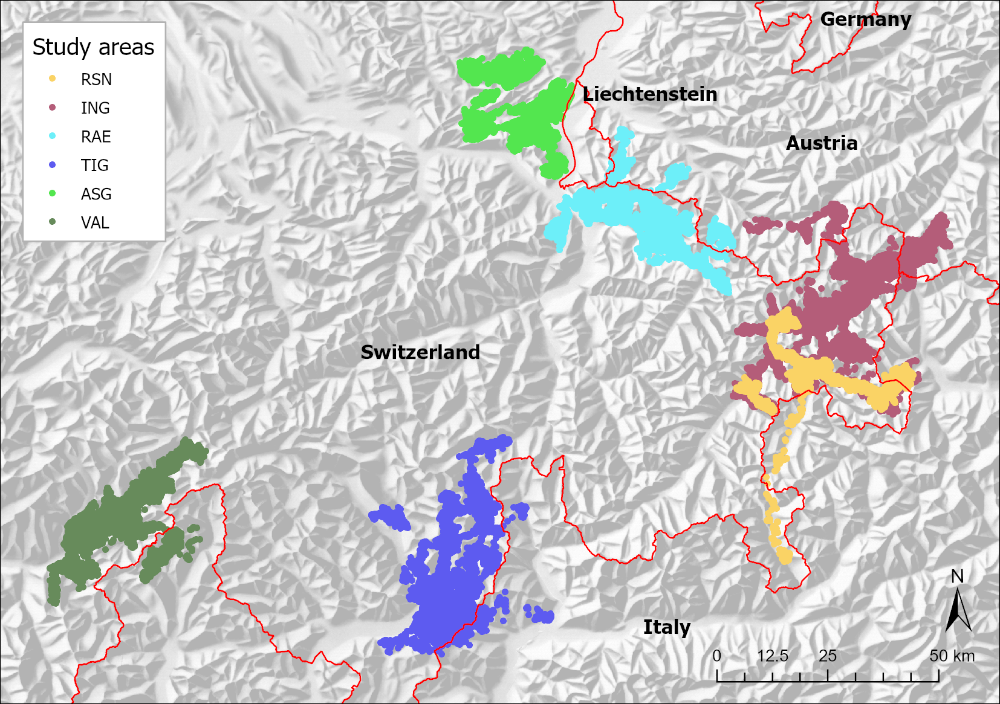
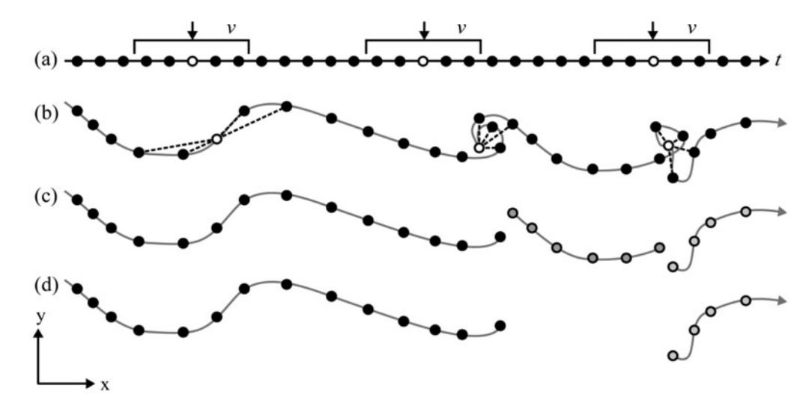
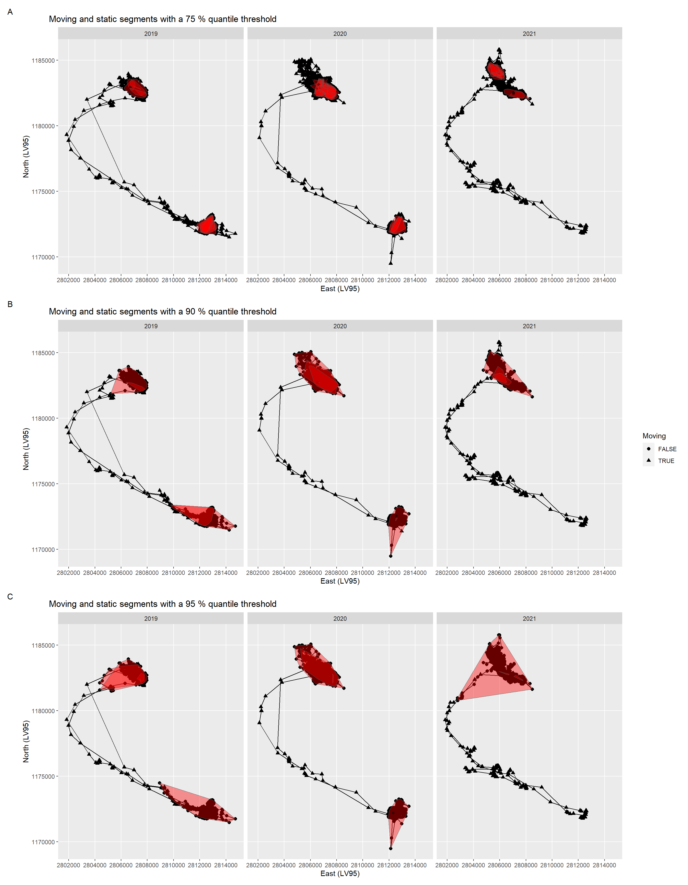
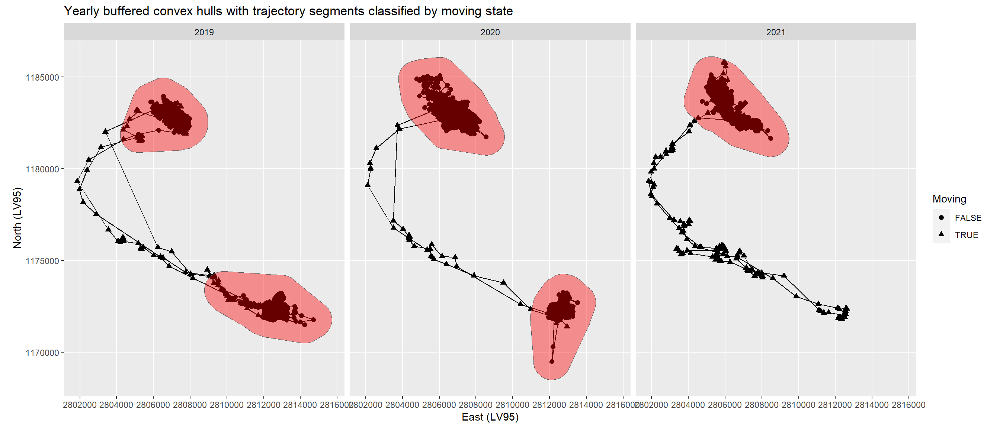
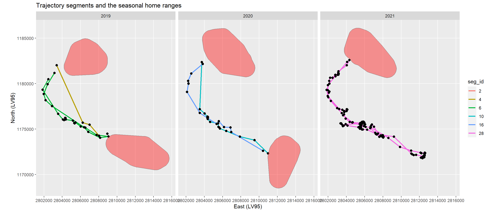
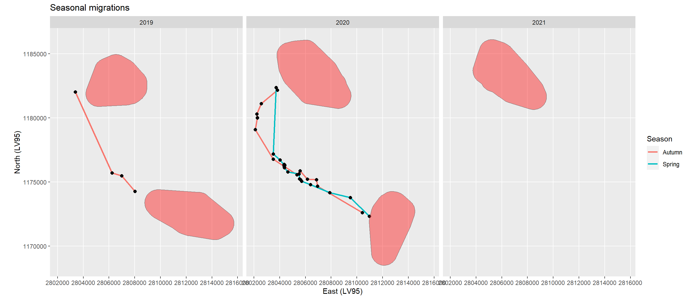
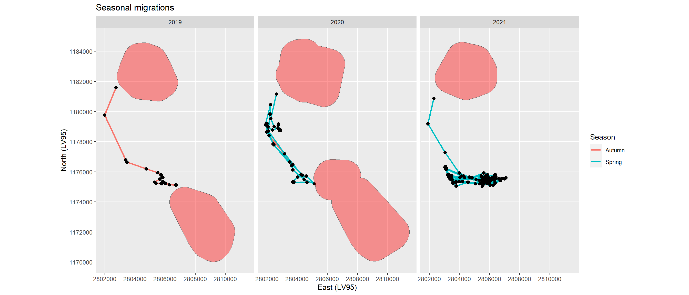

A Method to detect Seasonal Migration Patterns in Red Deer Data
Background and Research Goals
Ungulates use their habitats heterogeneously, prefer and avoid certain habitat parameters and adapt their behaviour to circumstances (Allen et al. 2014). The existence of red deer (Cervus elaphus) is affected by feeding, reproduction and the avoidance of predators (Clutton-Brock et al. 1982). The concept of the «landscape of fear» represents relative levels of predation risk as peaks and valleys that reflect the level of fear of predation a prey animal experiences in different parts of its home range (Laundré et al. 2010). Canadian studies on elk (Cervus elaphus canadensis) have shown that in human-dominated landscapes, effects on red deer behaviour caused by human disturbance exceed those of habitat and natural predators (Ciuti et al. 2012). A comparison of red deer behaviour in America and Europe led to the conclusion that human activity is identified as the strongest driver of red deer movement (Mumme et al. 2023).
Red deer populations in highly seasonal environments show partial migration, meaning that there are migratory and resident individuals in one population, but the proportion can vary between populations (Mysterud et al. 2011). Their preferences for habitat parameters in rugged mountain areas are associated with forage quality (Zweifel-Schielly et al. 2009) and high biomass (Zweifel-Schielly et al. 2012, Schweiger et al. 2015). During the green-up season migratory individuals have access to higher quality forage than resident. Thus, habitat selection of red deer in montane to alpine habitats depends on human presence, landscape characteristics, the stage of vegetation phenology (green-up), and the migrant strategy (Sigrist et al. 2022).
Understanding the behaviour of ungulates is highly related with the knowledge about their movement. Despite the fact that migration is a well-known and widespread ecological phenomenon, there is still no consensus on how to describe and define it (Dingle and Alistair Drake 2007, Cagnacci et al. 2011). Many methods have in common that they tackle the movement ecology paradigm of organismal movement (Nathan et al. 2008) regarding their specific questions: The internal state (why move?), motion (how to move?), and navigation (when and where to move?).
Methods to analyse movement often start with separating migrating from non-migrating individuals. Trajectories, i.e. the spatiotemporal footprint of a moving and tracked object (Laube 2017), are split into moving and static segments. We are interested in red deer, whether they seasonally migrate and if so, when and where. Thus, we applied a method using the QGIS plug-in “MigrO” to detect segments of minimum 30 days residency, i.e. home ranges (Fellmann 2022). Concluding from these home ranges and the timestamp entering and leaving them we detected static and moving segments of the trajectories. We got good results, but the method had its disadvantages. First, we had to set a start date for the algorithm. We took the 1st of March, as we expected red deer at that time still to stay in their winter habitats. Due to these settings we lost static segments in the transition from February to March. A second disadvantage was the need of much handwork, as some attributes had to be added manually, e.g. the classification into migrant and non-migrant individuals. Thus, in this exercise I want to develop another method to describe red deer migrations and answer the main research questions:
How to find start and end dates in red deer trajectories, and how long do they last?
How do these results perform compared to the “MigrO method”?
Methods
Note: I preprocessed a dataset of 322 red deer individuals. For the further steps I then concentrated on only one individual and developed the algorithm. Finally, I applied the algorithm to another example individual to test its performance. The goal is to process all individuals in a future next step.
Data Description
I used data from six telemetry studies across the Alps, i.e. from western Austria, northern Italy, Liechtenstein, as well as eastern and southern Switzerland (Figure 1). They cover montane to alpine habitats of red deer in a) inner alpine valleys of the east (studies RSN and ING, Swiss National Park with its surrounding areas in the canton of Grisons, Tyrol, the Autonomous province of Bolzano – South Tyrol and the province of Sondrio), and b) of the west (study VAL in the canton of Valais and the province Verbano – Cusio – Ossola), in c) the Swiss northeastern Pre-Alps and Alps (study ASG in the cantons of Appenzell Inner-Rhodes, Appenzell Outer-Rhodes and St. Gallen and study RAE with Liechtenstein, Vorarlberg and the canton of Grisons), and in d) the alpine south (study TIG in the cantons of Grisons and Ticino and provinces of Como, Lecco and Sondrio).
Trajectory Segmentation
To identify static and moving segments of trajectories I followed an adapted four step processing (Laube and Purves 2011) (Figure 2).

Preprocessing
- First, I defined a temporal window of +/- 15 days, according to the “MigrO method”, which defined segments of minimum 30 days residency as home ranges (Fellmann 2022) (Appendix).
- Second, I calculated the mean of all distances from one location within this 30 days window to every other location, grouped by individuals.
Static and Moving Segments of Trajectories
- From this third step on I continued with only one individual. Within the first 15 days and within the last 15 days of the individual trajectory mean distances were calculated on incomplete 30 days windows. Thus, I have removed them to prevent bias. To detect moving segments of the trajectory I then explored thresholds for the mean distances of the 30 days windows of 75 % quantile, 90 % and 95 %. Based on the static segments I calculated home ranges using the method of convex hull.
Extraction of Seasonal Migration Segments
- As the intermediate value the 90 % quantile threshold fitted best I merged all overlaying convex hulls per year and buffered with 1000 m, followed by an intersection with the locations. The remaining segments contain seasonal migration, i.e. migration between summer and winter home range, and excursions. The migrations I extracted finally by setting a threshold of greater than 2000 m for the distance between the start and end locations of the segments, because excursions might have their start and end location close by.
Results
Static and Moving Segments of Trajectories
The female red deer with ID 20211 included data from the years 2019 to 2021 (Figure 3). As thresholds for the mean distances of the 30 days windows I calculated the 75 % quantile (953 m, A), the 90% (2904 m, B) and the 95 % (4747 m, C). Based on the static segments I calculated convex hulls per year, i.e. seasonal home ranges of ID 20211.

Extraction of Seasonal Migration Segments
Merging and buffering the convex hulls of the static segments led to a winter and a summer home range in 2019 and 2020, and a winter home range only in 2021 (Figure 4).

The intersection of the seasonal home ranges with the locations led to segments only outside the home ranges. These include seasonal migration segments from summer to winter home ranges and vice versa, and excursions (Figure 5). As these excursion segments have the start and end location towards the same home range I removed them by using a threshold of 2000 m distance between the start and end locations of the segments (Figure 6).
The resulting trajectory segments show the seasonal migrations in two of the tree years (Figure 6). In 2021 the migration from the winter to the summer home range had not yet started. Migration duration lasted only from 7 to 24 hours (Table 1).


| id | year | seg_id | seg_start | seg_end | duration |
|---|---|---|---|---|---|
| 20211 | 2019 | 4 | 2019-10-10 20:00:10 | 2019-10-11 03:02:30 | 7 hours |
| 20211 | 2020 | 10 | 2020-05-06 02:00:40 | 2020-05-07 02:00:11 | 24 hours |
| 20211 | 2020 | 16 | 2020-09-25 13:00:10 | 2020-09-26 04:03:00 | 15 hours |
Test with a Second Individual
For a second individual (ID 20215) the algorithm also delivered a winter and a summer home range in 2019 and 2020, and a winter home range only in 2021. In contrast to ID 20211 with only very short migrations these lasted from 1 hour to 12 days (Figure 7; Table 2). In 2021 a segment remained which was neither a seasonal migration nor an excursion.

| id | year | seg_id | seg_start | seg_end | duration |
|---|---|---|---|---|---|
| 20215 | 2019 | 4 | 2019-10-07 19:00:42 | 2019-10-08 22:00:14 | 27 hours |
| 20215 | 2020 | 14 | 2020-04-26 03:00:58 | 2020-05-04 03:01:12 | 192 hours |
| 20215 | 2020 | 22 | 2020-09-26 21:02:46 | 2020-09-26 22:03:04 | 1 hours |
| 20215 | 2021 | 30 | 2021-05-08 21:00:16 | 2021-05-20 22:00:42 | 289 hours |
Comparison to the Results of the “MigrO Method”
The “MigrO Method” defined polygons of residency with a start and end date (Table 3). Thus, migration data were the locations between these home ranges. ID 20211 had 6 home ranges, what means that there were 3 seasonal migrations between. The migration dates from my algorithm in 2019 exactly fitted the ones of the “MigrO Method” (2019-10-10 to 2019-10-11). In 2020 they differed in one day in spring (start on 2020-05-06 vs. 2020-05-05) and in autumn (start on 2020-09-25 vs. 2020-09-24). ID 20215 had also 6 home ranges in the “MigrO Method”. In 2019 the migration dates again perfectly fitted the ones of the “MigrO Method” (2019-10-07 to 2019-10-08), although the end date there was only on 2019-10-09. In 2020 in spring the start date differed in seven days (2020-04-26 vs. 2020-05-03), and the end date in tree days (2020-05-04 vs. 2020-05-07). In autumn the dates exactly fitted again (2020-09-26). In spring 2021 there finally was a difference of one day in start (2021-05-08 vs. 2021-05-07).
| id | year | hr_start | hr_end | duration |
|---|---|---|---|---|
| 20211 | 2019 | 29.05.2019 12:00 | 10.10.2019 08:00 | 133 days |
| 20211 | 2019 | 11.10.2019 23:00 | 29.02.2020 02:00 | 140 days |
| 20211 | 2020 | 01.03.2020 08:00 | 05.05.2020 20:00 | 65 days |
| 20211 | 2020 | 07.05.2020 13:00 | 24.09.2020 13:00 | 140 days |
| 20211 | 2020 | 26.09.2020 06:00 | 28.02.2021 02:00 | 154 days |
| 20211 | 2021 | 01.03.2021 15:00 | 27.05.2021 07:00 | 86 days |
| 20215 | 2019 | 07.06.2019 23:00 | 07.10.2019 06:01 | 121 days |
| 20215 | 2019 | 09.10.2019 09:00 | 29.02.2020 04:00 | 142 days |
| 20215 | 2020 | 01.03.2020 03:00 | 03.05.2020 06:00 | 63 days |
| 20215 | 2020 | 07.05.2020 16:00 | 26.09.2020 00:02 | 141 days |
| 20215 | 2020 | 27.09.2020 01:00 | 28.02.2021 18:00 | 154 days |
| 20215 | 2021 | 01.03.2021 14:01 | 07.05.2021 22:00 | 67 days |
Discussion
The algorithm delivered reliable results of seasonal migrations for these two example individuals. Start and end dates were named precisely to the hour. As expected migration duration was usually short. Another advantage is that it detects resident behaviour too, i.e. only overlapping home ranges. However, the application of this algorithm on other individuals could be challenging, as the settings were taken regarding an optimized performance for ID 20211. This individual showed distinct seasonal migrations. The mean distance thresholds to classify moving and static trajectory segments I set by only visual assessment, and also the buffer around the convex hulls. For individuals with less distinct migration behaviour the results might be therefore less precise. For example, in spring some individuals attempt to reach their summer home range, but return after a while, probably because there was still too much snow. If such an individual finally succeeds a long migration duration would result, as the algorithm does not detect and cut these excursions. The “MigrO method” does, but its disadvantage is the setting of the 1st March as the yearly start date.
Further disadvantages of my algorithm are that the first and the last 15 days of the trajectory are cut and that dispersing behaviour in the end of the trajectory is not detected. In addition, cutting the migration segments with the home ranges results in loosing the real start and end location of the migration. In case a migration segment only consists of two locations and both are inside the home ranges, that migration would be removed. It is therefore necessary to add them again. This would then also enable pattern detection like hopping from one protected area to another. Thus, further development of the algorithm is needed.
Acknowledgement
I would like to thank Patrick Laube for including me in the course and giving me such exciting content regarding Computational Movement analysis. A special thank I address to Nils Ratnaweera for the great support during the classes and for this analysis.
References
Allen, A. M., J. Månsson, A. Jarnemo, and N. Bunnefeld. 2014. The impacts of landscape structure on the winter movements and habitat selection of female red deer. European Journal of Wildlife Research 60:411–421.
Cagnacci, F., S. Focardi, M. Heurich, A. Stache, A. J. M. Hewison, N. Morellet, P. Kjellander, J. D. C. Linnell, A. Mysterud, M. Neteler, L. Delucchi, F. Ossi, and F. Urbano. 2011. Partial migration in roe deer: Migratory and resident tactics are end points of a behavioural gradient determined by ecological factors. Oikos 120:1790–1802.
Ciuti, S., J. M. Northrup, T. B. Muhly, S. Simi, M. Musiani, J. A. Pitt, and M. S. Boyce. 2012. Effects of Humans on Behaviour of Wildlife Exceed Those of Natural Predators in a Landscape of Fear. PLoS ONE 7.
Clutton-Brock, T. H., F. E. Guinness, and S. D. Albon. 1982. Red Deer: Behaviour and Ecology of Two Sexes. G. B. Schaller, editor. Wildlife Behaviour; Ecology, Edinburgh.
Dingle, H., and V. Alistair Drake. 2007. What is migration? BioScience 57:113–121.
Fellmann, U. 2022. Migration Behavior Analysis of Red Deer ( Cervus elaphus ) and the Influence of Environmental Covariates on Migration Timing. Master's Thesis, Migration Behavior Analysis of Red Deer (Cervus elaphus); the Influence of Environmental Covariates on Migration Timing GEO 511 Master’s Thesis Author Ursula Fellmann 13-928-916 Supervised by Prof. Dr. Robert Weibel Dr. Wibke Peters (Wibke.Peters@lwf.b.
Laube, P. 2017. Representation: Trajectories. International Encyclopedia of Geography: People, the Earth, Environment and Technology 1–11.
Laube, P., and R. S. Purves. 2011. How fast is a cow? Cross-Scale Analysis of Movement Data. Transactions in GIS 15:401–418.
Laundré, J. W., L. Hernández, and W. J. Ripple. 2010. The Landscape of Fear: Ecological Implications of Being Afraid. The Open Ecology Journal 3:1–7.
Mumme, S., A. D. Middleton, P. Ciucci, J. D. Groeve, A. Corradini, E. O. Aikens, F. Ossi, P. Atwood, N. Balkenhol, E. K. Cole, L. Debeffe, and S. R. Dewey. 2023. Wherever I may roam — Human activity alters movements of red deer (Cervus elaphus) and elk (Cervus canadensis) across two continents. Global Change Biology 1–14.
Mysterud, A., L. E. Loe, B. Zimmermann, R. Bischof, and E. Meisingset. 2011. Partial migration in expanding red deer populations at northern latitudes - a role for density dependence? Oikos 1817–1825.
Nathan, R., W. M. Getz, E. Revilla, M. Holyoak, R. Kadmon, D. Saltz, and P. E. Smouse. 2008. A movement ecology paradigm for unifying organismal movement research. Proceedings of the National Academy of Sciences of the United States of America 105:19052–19059.
Schweiger, A. K., M. Schütz, P. Anderwald, M. E. Schaepman, M. Kneubühler, R. Haller, and A. C. Risch. 2015. Foraging ecology of three sympatric ungulate species - behavioural and resource maps indicate differences between chamois, ibex and red deer. Movement Ecology 3:6.
Sigrist, B., C. Signer, S. D. Wellig, A. Ozgul, F. Filli, H. Jenny, D. Thiel, S. Wirthner, and R. F. Graf. 2022. Green up selection by red deer in heterogeneous , dominated landscapes of Central Europe. Ecology and Evolution 1–13.
Zweifel-Schielly, B., M. Kreuzer, K. C. Ewald, and W. Suter. 2009. Habitat selection by an Alpine ungulate: The significance of forage characteristics varies with scale and season. Ecography 32:103–113.
Zweifel-Schielly, B., Y. Leuenberger, M. Kreuzer, and W. Suter. 2012. A herbivore’s food landscape: Seasonal dynamics and nutritional implications of diet selection by a red deer population in contrasting Alpine habitats. Journal of Zoology 286:68–80.
Appendix
Code
# preprocessing to calculate distances between locations in a temporal window
log_file <- "Q:/prjdata/zool/ungulate/ung_monitoring/telemetry/reddeer/behaviour/code/movement/migration/data_work/logfile15.txt"
log_conn <- file(log_file, open = "wt")
sink(log_conn,append = TRUE,type = "message")
library(tidyverse)
library(data.table)
library(sf)
library(lubridate)
# load df as sf
locs_win <- fread("Q:/prjdata/zool/ungulate/ung_monitoring/telemetry/reddeer/behaviour/code/movement/migration/origdata/locs_win.csv") %>%
st_as_sf(coords = c("x", "y"), crs = 2056, remove = FALSE)
# define window of t +/- 15 days an run through sf (+/- 4 minutes)
locs_win <- locs %>%
mutate(t_min15 = t - 15*24*3600 - 240,
t_plus15 = t + 15*24*3600 + 240,
deployment = as.factor(deployment),
dep_num = as.numeric(deployment)) %>%
select(loc_nr, deployment, dep_num, t, t_min15, t_plus15, x, y)
## find moving and static phases in trajectories
# use cma_movement.bat to run code parallel with 40 cores
# number of tile each session calculates
arg <- commandArgs(trailingOnly = FALSE) # command line argument
k <- as.numeric(arg[6])
k
n.parallel <- split(seq(1:length(unique(locs_win$dep_num))), sort(seq(1:length(unique(locs_win$dep_num))) %% 40))
locs_win <- locs_win %>% filter(dep_num %in% n.parallel[[k]])
# create output table
output <- data.frame(loc_nr = numeric(),
deployment = logical(),
dep_nr = numeric(),
t = POSIXct(),
t_min15 = POSIXct(),
t_plus15 = POSIXct(),
x = numeric(),
y = numeric(),
in_range = logical(),
stepMean30 = numeric())
# loop through deployments and locations
for (d in unique(locs_win$dep_num)){
locs_win_filter <- locs_win %>%
filter(dep_num == d) %>%
mutate(t_range = interval(min(t), max(t)),
in_range = case_when(t_min15 %within% t_range &
t_plus15 %within% t_range ~ TRUE,
TRUE ~ FALSE)) %>%
dplyr::select(-t_range)
for (l in 1:nrow(locs_win_filter)){
# filter for data of current loop run
now <- locs_win_filter[l,]
obs_win <- locs_win_filter %>%
filter(t >= as.POSIXct(now$t_min15, tz = "UTC"),
t <= as.POSIXct(now$t_plus15, tz = "UTC"))
# calculate and append stepMean30 to now
now$stepMean30 <- st_distance(obs_win, now) %>% as.numeric() %>% mean()
# append now to output
output <- rbind(output, now)
}
}
fwrite(output, paste0("Q:/prjdata/zool/ungulate/ung_monitoring/telemetry/reddeer/behaviour/code/movement/migration/data_work/win15/output_", k,".csv"))
sink()
close(log_conn)